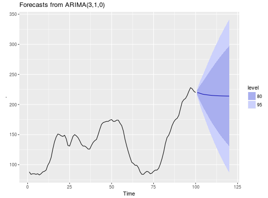

Largely a wrapper for the arima function in the stats
package. The main difference is that this function allows a drift term. It
is also possible to take an ARIMA model from a previous call to Arima
and re-apply it to the data y.
Arima(y, order = c(0, 0, 0), seasonal = c(0, 0, 0), xreg = NULL, include.mean = TRUE, include.drift = FALSE, include.constant, lambda = model$lambda, biasadj = FALSE, method = c("CSS-ML", "ML", "CSS"), model = NULL, x = y, ...)
| y | a univariate time series of class |
|---|---|
| order | A specification of the non-seasonal part of the ARIMA model: the three components (p, d, q) are the AR order, the degree of differencing, and the MA order. |
| seasonal | A specification of the seasonal part of the ARIMA model, plus the period (which defaults to frequency(y)). This should be a list with components order and period, but a specification of just a numeric vector of length 3 will be turned into a suitable list with the specification as the order. |
| xreg | Optionally, a vector or matrix of external regressors, which must have the same number of rows as y. |
| include.mean | Should the ARIMA model include a mean term? The default
is |
| include.drift | Should the ARIMA model include a linear drift term?
(i.e., a linear regression with ARIMA errors is fitted.) The default is
|
| include.constant | If |
| lambda | Box-Cox transformation parameter. Ignored if |
| biasadj | Use adjusted back-transformed mean for Box-Cox
transformations. If |
| method | Fitting method: maximum likelihood or minimize conditional sum-of-squares. The default (unless there are missing values) is to use conditional-sum-of-squares to find starting values, then maximum likelihood. |
| model | Output from a previous call to |
| x | Deprecated. Included for backwards compatibility. |
| ... | Additional arguments to be passed to |
See the arima function in the stats package.
The additional objects returned are
The time series data
The regressors used in fitting (when relevant).
See the arima function in the stats package.
# Fit model to first few years of AirPassengers data air.model <- Arima(window(AirPassengers,end=1956+11/12),order=c(0,1,1), seasonal=list(order=c(0,1,1),period=12),lambda=0) plot(forecast(air.model,h=48))lines(AirPassengers)# Apply fitted model to later data air.model2 <- Arima(window(AirPassengers,start=1957),model=air.model) # Forecast accuracy measures on the log scale. # in-sample one-step forecasts. accuracy(air.model)#> ME RMSE MAE MPE MAPE MASE ACF1 #> Training set 0.3576253 7.89734 5.788344 0.1458472 2.670181 0.1982148 0.05807465#> ME RMSE MAE MPE MAPE MASE #> Training set 0.5159268 12.13132 8.14054 0.07949083 1.900931 0.2266508 #> ACF1 #> Training set -0.2166661# out-of-sample multi-step forecasts accuracy(forecast(air.model,h=48,lambda=NULL), log(window(AirPassengers,start=1957)))#> ME RMSE MAE MPE MAPE MASE #> Training set 0.35762533 7.8973404 5.78834425 0.1458472 2.670181 0.1982148 #> Test set -0.08403416 0.1031891 0.08801596 -1.3982000 1.463555 0.0030140 #> ACF1 Theil's U #> Training set 0.05807465 NA #> Test set 0.75730561 0.9290965